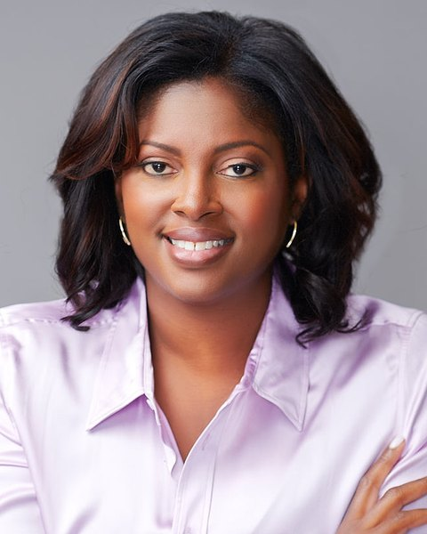
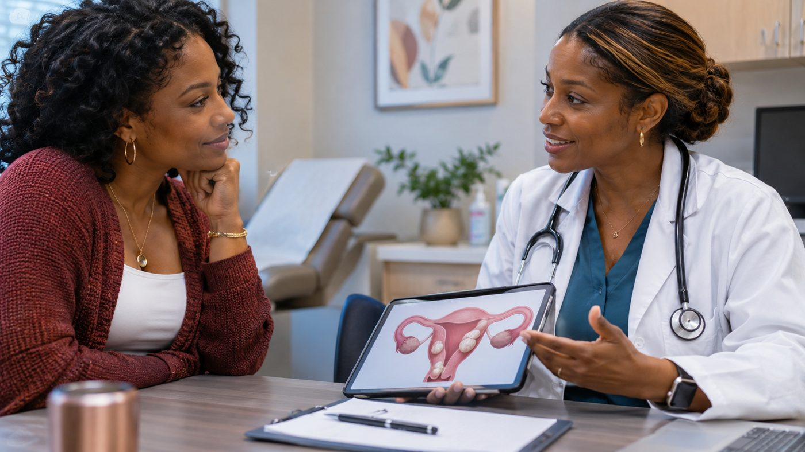
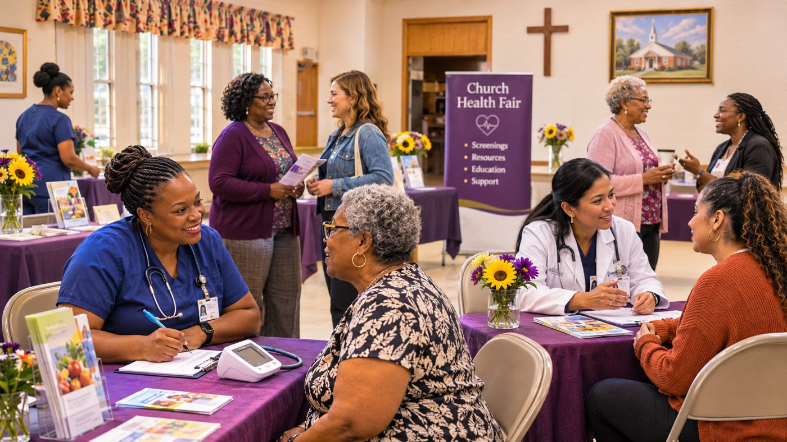

Uterine fibroids affect up to 80% of women by age 50,1 yet science still can’t say why some women develop them and others don’t.2 Sateria Venable has spent nearly two decades trying to change that.

Sateria Venable, Founder and CEO, The Fibroid Foundation
Fibroids are the leading reason for hysterectomy in the United States.3 While hysterectomy may be the right choice for some women, it is not the only option. Depending on a woman’s symptoms and whether she hopes to become pregnant, other treatments can include medication to ease heavy bleeding or shrink fibroids; uterine artery embolization, which cuts off a fibroid’s blood supply; MRI-guided focused ultrasound, which destroys fibroids without an incision; and myomectomy, which removes the fibroids and keeps the uterus.3 Too many women never hear about these choices.
Even the word carries history. “Hysterectomy” comes from hystera, the ancient Greek word for uterus, the same root as “hysteria.” For centuries, physicians blamed the uterus for “hysteria,” a catch-all diagnosis for women’s anxiety, irritability and fainting, and removing it was seen as a cure. Hysteria was not dropped as an official medical diagnosis until 1980. Some experts now argue the surgery should be renamed “uterectomy.”4
Venable is the Founder and CEO of The Fibroid Foundation. What began around 2006 as a blog about her own fibroid journey — four surgeries and a hard search for a specialist in Chicago — became the Fibroid Initiative and, in 2013, The Fibroid Foundation. Today it reaches community members in more than 180 countries.5
IAWH Executive Director Cheryl J. Thompson sat down with Venable on November 11, 2026, joined by Hanan Kair and Bryan Flores, American University Public Health Scholars working with IAWH this semester. The students developed most of the questions. The conversation previews IAWH’s July 2027 Special Issue on uterine fibroids.
This interview has been edited for length and clarity.
“I knew I wasn’t the only one suffering”
IAWH (Cheryl): Many people come to this work through a personal experience, or that of a relative or close friend. Would you talk about your personal connection to uterine fibroids and how it led you to found the organization?
Venable: Fibroids impact the vast majority of women, and the symptoms are often worse in women of African descent. Every woman’s experience is different, but I was one of those people who had just a few fibroids that wreaked havoc for years.
After my third of what would become four surgeries, I struggled to find a fibroid specialist in Chicago. That raised a huge flag for me. I was in such a big city and couldn’t find someone to treat me. So I launched what became The Fibroid Foundation. It started as a blog where I wrote about my experience month to month.
Back then, around 2006 or 2007, you didn’t hear about fibroids, heavy menstrual bleeding or periods on the internet or social media. Some people thought it wasn’t appropriate. But I saw the reactions of the women I spoke with. Their willingness to share their experiences was proof that there was a need, and that I wasn’t the only one suffering. It started as the Fibroid Initiative, and in 2013 we became The Fibroid Foundation, marking the beginning of what is now a global movement.
Priorities: medical training and research funding
IAWH (Cheryl): What are the Foundation’s top priorities right now that could be reflected through the October 19th executive order, Advancing Women’s Health to Improve Outcomes in All Phases of Life?8
Venable: In July, our alliance partners, the Society for Women’s Health Research and the American College of Obstetricians and Gynecologists, signed onto a $20 billion moonshot for women’s health. The Fibroid Foundation signed on as well. Much of that moonshot language appeared in the executive order last month.
Uterine fibroids affect an estimated 26 million reproductive-age women in the United States, and countless others through menopause. Yet the condition hasn’t received the funding or attention it deserves. Our priorities work in tandem.
The first is medical education and training. Most gynecology residents are never trained in minimally invasive uterine-sparing surgery. That creates a huge burden on women. Residents need comprehensive training in the full range of fibroid treatment options, including alternatives to hysterectomy, before completing their gynecology training.
The second is research funding. It’s heartbreaking. Most of our community members want to know what causes fibroids, and we don’t know. We know estrogen makes them worse, but we don’t know why some women develop fibroids and others don’t. You would think we’d have those answers for the number one gynecologic tumor in women. We have a lot of catching up to do. With attention that reflects the size of the community affected, we could make huge strides in understanding the disease.
Where care falls short
IAWH (Hanan): What did the Foundation’s virtual community engagement project reveal about differences in how women from different backgrounds receive care and treatment for fibroids?
Venable: It told us a few things. In the Southeast United States, hysterectomy is more prevalent, and the evidence of disparities seemed greater. Rural populations are drastically impacted. Some rural communities don’t have a gynecologist, so the first touch point is often a primary care physician.
Those gaps in care and education showed us where to focus. We’re now doing a National Institutes of Health study on uterine fibroids, and one project recruits physicians to help them better identify, diagnose and communicate with fibroid patients. We opened it to physicians of all backgrounds, not just gynecology, because our community members may not see a gynecologist first.
Bringing every voice to the table
IAWH (Bryan): As the Foundation does advocacy and research, how do you make sure diverse voices are represented, whether patients, researchers or communities?
Venable: We focus on bringing voices to the table. We did two studies on Latinas and fibroids with Mayo Clinic, studies that had never been done before. As a person of color, I’m particularly sensitive to the gaps I see. I want our work to reflect how communities are truly impacted.
In some spaces, fibroids have been labeled a Black woman’s disease. That is not true. Every ethnicity gets fibroids. We reach more than 180 countries, which shows how pervasive this is. We received feedback on Capitol Hill that the fibroid bill didn’t pass because it was labeled a Black woman’s disease. That feedback in and of itself is horrendous. It showed me we need to communicate which populations are truly impacted. And, if only women of African descent are impacted, it should still be funded. This is evidence of disparities on Capitol Hill.
If only women of African descent are impacted, it should still be funded.
Sateria Venable
It’s very layered. We try to give community members the tools they need for a doctor’s appointment: to advocate for themselves and to see their provider as a partner, not someone who gives instructions with no explanation. It’s reshaping the patient-provider relationship. And we hope patients share those skills with family members across generations, because they apply to many health concerns, not just fibroids.
The research gap: treatment
IAWH (Hanan): What is the biggest gap in fibroid research or clinical data that patients and physicians are asking for, and what is being done to close it?
Venable: There are a lot of gaps. Beyond understanding what causes the disease, one of the biggest is treatment. We don’t have enough minimally invasive, uterine-sparing options.
We work with pharmaceutical partners to vet emerging treatments from the patient perspective. When a promising product enters clinical trials, we track it all the way through. We make sure the trial puts patients first, doesn’t disrupt their lives unreasonably, and doesn’t prey on them.
We also work on the policy side to advocate for research funding and legislation that advances fibroid care and menstrual health.
We use social media to communicate emerging science. During the pandemic, the FDA approved two fibroid drugs in pill form. They flew under the radar, coming out as a footnote rather than the huge news they should have been.
Annually we host a Fibroid Summit. Researchers present emerging science that may not be widely distributed yet, and patients question them. Many researchers aren’t used to presenting to patients, so they adjust their language for people without a medical degree. More clinicians are attending too. As a patient, I may see a treatment option as a priority that medical science hasn’t. The summit lets us bring that forward. There needs to be much more collaboration between patients and providers, rather than conversations in silos.
When a doctor dismisses you
IAWH (Bryan): What would the Foundation recommend if a provider dismisses someone’s fibroid symptoms or offers no alternative besides a hysterectomy?
Venable: Almost always, we recommend they find another provider. And we help them find one. We don’t leave them to research that on their own. We have a network of providers. If it’s a community we’re not familiar with, we ask our medical advisory board for a recommendation. That board includes some of the top fibroid surgeons in the United States and Canada, and we’ll be adding members from other countries in the coming months.
One of our medical advisory board members removed more than 50 fibroids from a woman while preserving her uterus. We also hear from women with one or two fibroids who are distraught after receiving a recommendation for hysterectomy. Hysterectomy may be appropriate in some of these cases — the number of fibroids alone doesn’t determine the best treatment. What matters is that women understand the recommendation and have the opportunity to discuss all appropriate options.

Every woman deserves to hear all her options.
There’s also a lot of generational fear around treatment, not just in the United States. I learned it’s true in the UK for people of color, too. Fear of surgery is global. We try to address those fears by helping women understand their options and what to expect from treatment.
Early treatment, being aware and being educated is where the power lies. Once you’re informed, you can make a better decision.
Early treatment, being aware and being educated is where the power lies.
Sateria Venable
Understanding the treatment spectrum
IAWH (Cheryl): There are more treatment options now than when you were searching in Chicago. Do they fall on a continuum, from minimally invasive to hysterectomy? Is there a way to help patients choose the right one for their needs?
Venable: We do our best to explain, verbally, in videos and in writing, with experts explaining which options may suit particular scenarios, including fertility preservation.
But some providers make statements that counteract that, particularly about uterine artery embolization. Some say it’s okay for a woman who wants to conceive. The now-retired physician who pioneered that procedure served on our medical advisory board. He said he absolutely does not recommend embolization for anyone who wants to conceive. Embolization cuts off blood flow to the fibroids, and it could prevent an embryo from implanting successfully.
Given how common fibroids are, you would think there would be many more treatment options after almost 20 years of advocacy. Not really. The myomectomy has advanced significantly, though. Robotic myomectomies are having a lot of success with the right, well-trained provider. We also have medical management now. But one medication that helped me avoid hysterectomy until menopause is more readily prescribed throughout Europe. Here, it’s rarely recommended and ridiculously expensive. Those are some of the gaps we’ve seen between countries.
“Someone who has fibroids has never heard the word”
IAWH (Hanan): Through educating patients and physicians in different specialties, what has surprised you most about how people respond to new information about fibroids?
Venable: With patients, it’s not really a surprise, but I see it time and again, because I was the same way. Someone who has fibroids has never heard the word before.
With providers, and I want to say there are great providers out there, what surprises me is that some insist on not broadening their knowledge. They won’t use new technology or information or change how they interact with patients. That’s shocking to me. That includes some providers who have a uterus themselves, who you’d think would better understand the multi-dimensional impacts of fibroids. It goes beyond the uterus. Fibroids can take an emotional toll and affect relationships and family life as well as the workplace. Some providers simply won’t adjust what they consider tried-and-true methods. That’s really concerning.
Meeting people where they are
IAWH (Bryan): What does the Foundation believe needs to change to improve awareness, diagnosis and treatment of fibroids?
Venable: We’ve been proactive about building partnerships that reach more people. This year we launched a partnership sponsored by Always, a Procter & Gamble brand. Its new pad was designed for women with heavy menstrual bleeding, a common symptom of fibroids. At Essence Festival, Always distributed approximately 26,000 sample packages, each containing multiple pads. The Foundation was there to educate women about fibroids and heavy menstrual bleeding, answer questions, and connect them with resources and support.

Meeting women where they are.
That experience showed how much the setting matters. When you meet women in a welcoming, engaging environment, it’s easier to start conversations about topics they may not feel comfortable discussing. The information becomes more personal and more likely to resonate.
We also need more conversations like this one. Your organization can reach people who haven’t heard this information before and encourage them to share it with their families and communities.
As we discussed, fibroids affect women of every race and ethnicity, and trusted community spaces can help us reach them. Churches can be especially powerful partners in the Black community. We’ve encountered reluctance from some churches in Mississippi to discuss these topics, but opening those conversations could help more women find information and support.
We need spaces where people feel comfortable, like our Fibroid Foundation chapters and one-on-one conversations. I talk about this all the time because it’s my job and my experience. But many people don’t have that comfort level. You have to meet people where they are. At a chapter gathering, for example, one woman sharing her experience can help others open up.
Misconceptions
IAWH (Hanan): What are the most common misconceptions about fibroids, and what would you want a newly diagnosed woman to know?
Venable: There are quite a few. People are surprised when fibroids return after surgery. It’s heartbreaking to undergo major surgery and then, in my case, see them back less than a year later, when you’ve barely recovered.
Another misconception is that fibroid pain is confined to the uterus. It can extend across the pelvis and lower abdomen and into the lower back. I once had to explain this to a Yale-trained gynecologist who teaches all over the world. I was shocked that this broader impact wasn’t recognized, and I suspect my experience isn’t unique.
Some physicians also lack an understanding of how devastating heavy menstrual bleeding can be. We have a webinar in February 2027 on heart health and fibroids. A new paper shows severe anemia can damage the heart over time and can affect the lungs’ ability to expand and take in oxygen, which then affects the limbs. Then there’s the emotional side: missing social events, being guarded and self-conscious, carrying huge bags of pads everywhere you go.
When we were on Capitol Hill advocating for the fibroid bill, the lobbyists with us were men. After a few days of hearing the information, some told us they’d apologized to the women in their families. They’d learned how deeply impactful this is.
IAWH (Bryan): Florida recently passed an amendment expanding the data its uterine fibroid research database collects on patients. How might researchers benefit from that, without frightening patients?
Venable: There’s politics and there’s new science, and that’s politics. I’m hoping it’s reversed. It’s on our radar, and to the extent we can influence its reversal, we definitely will.
“No more smiling through meetings”
IAWH (Hanan): What advice would you give young women who might have symptoms but aren’t sure when to see a doctor? Some people doubt their symptoms and wait until things get worse.
Venable: Friends who flag it for them are really important. Generationally, we suffer. I say no more suffering. No more smiling through meetings when you’re cramping and feeling horrible. We’ve been taught to do that.
If your lifestyle is impacted by your period, it’s time to talk with a provider. If you’re held back from doing something, if you’re self-conscious in public, or if you’re buying a cartload of menstrual products every month, it’s definitely time.
If your lifestyle is impacted by your period, it’s time to talk with a provider.
Sateria Venable
Fibroids can grow really fast. We now know green tea extract and vitamin D can help slow fibroid growth early. And more teenage girls are being diagnosed. So it’s important to look at this ahead of time. I became a pescatarian for seven years trying to avoid surgery number four. I felt that reducing my exposure to hormones through my diet helped. It didn’t prevent the fourth surgery, but I went longer between surgeries than ever before.
Find a good provider and get an ultrasound. One test we don’t do enough, because it’s cost-prohibitive, is an MRI. Each fibroid has its own blood supply, and an MRI gives really important information on how to treat a particular fibroid. If you have a lot of fibroids, an ultrasound often can’t show all of them. Ask your doctor whether an MRI would help guide your care, and make sure they take the time to explain what your individual case means.
Fibroids at a Glance
- What they are: Noncancerous growths in the uterus, and the most common benign tumors in women of reproductive age.
- How common: 70 to 80 percent of women develop fibroids by age 50.7 In the United States, an estimated 26 million women between the ages of 15 and 50 have uterine fibroids.6
- Who: Women of every race and ethnicity get fibroids. Symptoms are often more severe in women of African descent.
- When to see a provider: When your period affects your daily life: you plan around it, feel self-conscious in public or go through large amounts of menstrual products.
- Ask about imaging: An ultrasound is a common first step. An MRI can show the size and location of each fibroid and help guide treatment.
- Know your options: Treatment ranges from medication to minimally invasive procedures to surgery. If you want to become pregnant, ask which options protect your fertility.
- Get a second opinion: If a provider dismisses your symptoms or offers only a hysterectomy, The Fibroid Foundation can help you find a specialist.
Share your fibroid story. IAWH will publish a Special Issue of the IAWH Health Journal on uterine fibroids in July 2027, Uterine Fibroids Awareness Month. Have you lived with fibroids? We want to hear about your journey. Sign up to speak with us and capture your story for the Special Issue.
Sources
1. National Institutes of Health, Office of Research on Women’s Health: Status of Research on Uterine Fibroids at the NIH (by age 50, more than 80% of African American women and about 70% of white women develop fibroids)
2. Premier Health: Majority of Women Will Develop Uterine Fibroids During Their Lifetime (root cause remains unknown)
3. American Family Physician: Uterine Fibroids: Diagnosis and Treatment (de la Cruz and Buchanan, 2017) (leading reason for hysterectomy; treatment options)
4. The Medical Republic: Why we need to make the term ‘hysterectomy’ history (Theresa Larkin, June 30, 2025) (origin of the word; history of “hysteria”)
5. Sateria Venable, interview with IAWH, November 11, 2026; The Fibroid Foundation (Foundation history and reach)
6. Society for Women’s Health Research: Uterine Fibroids (26 million women ages 15 to 50)
7. Society for Women’s Health Research: Uterine Fibroids Fact Sheet (July 2021) (70 to 80 percent of women by age 50)
About Sateria Venable
Sateria Venable is the Founder and CEO of The Fibroid Foundation, which reaches community members in more than 180 countries. To learn more about uterine fibroids, the annual Fibroid Summit and the Foundation’s chapters, visit fibroidfoundation.org.
Interview conducted by Cheryl J. Thompson, MSPH, Executive Director, IAWH Health, Hanan Kair and Bryan Flores, American University Public Health Scholars. Questions were developed by Hanan Kair and Bryan Flores. This article is for general education and is not medical advice. Talk with your health care provider about your own health.
Free · Monthly · Evidence-Based
Get the IAWH Health Journal
Health news and practical guidance for women, delivered to your inbox once a month. Subscribe and never miss an issue.
Subscribe to the JournalAlready a subscriber? Share this page with a woman you love.